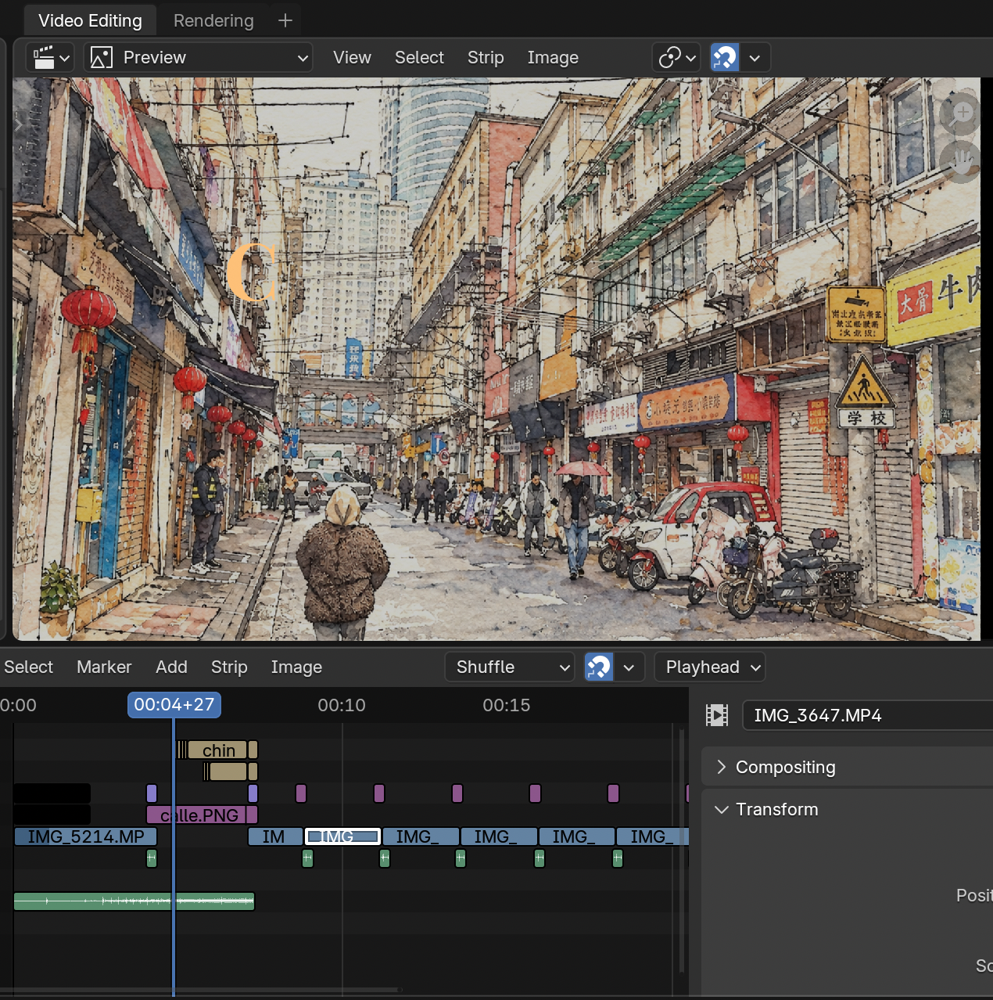

Audiovisual Editing & Postproduction
A collection of practical exercises and cinematic video editing assignments from my university studies, exploring editing, aesthetic storytelling, motion tracking and CGI integration. This page is still growing: more projects will be added throughout this semester.

the objective
Learn dynamic video editing and motion tracking.
the workflow
Plan, film my own footage, then track and edit it in postproduction.
the techniques
Single-point, 4-point, camera and object tracking with 3D elements.
practical assignments & exercises
Breakdown of the video editing and tracking assignments completed so far.
Task 01 Video Editor & Cinematic Cut
An edit of my trip to China. Each clip is introduced by an animated sticker.
Task 02 Single-Point Tracking
A video of a red traffic light with the camera crossing the street. Instead of the usual pedestrian figure, there is an animation I made, which follows the light using single-point tracking.
Task 03 4-Point Tracking
Tracking four points on a flat surface, such as a screen, to attach a virtual element to it.
Task 04 Camera Tracking
Tracking the camera movement of a shot so a 3D element sits naturally in the real scene.
Task 05 Object Tracking & Replacement
Tracking a moving object and replacing it with a virtual one.
More projects are coming this semester. This page will be updated as I complete them.